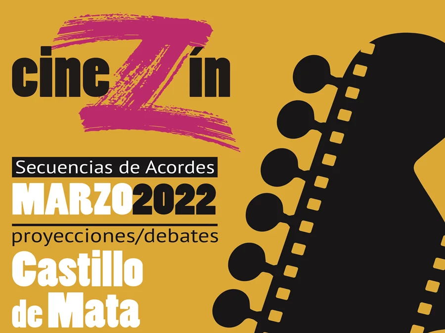
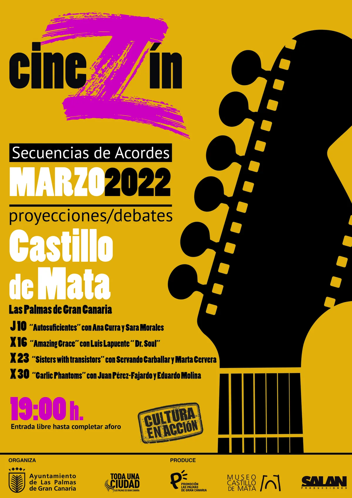
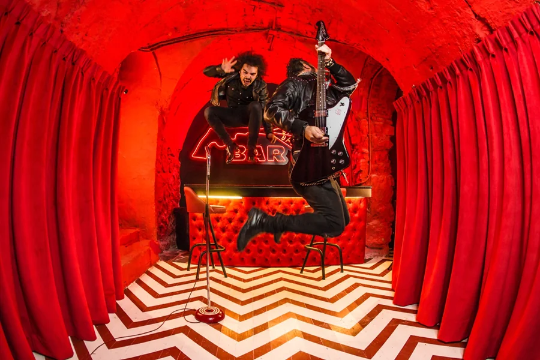

I
📍 Castillo de Mata, Las Palmas
📅 10 – 30 mar 2022
🎟 Entrada libre
Películas
Autosuficientes Ana Curra
Amazing Grace Aretha Franklin
Sisters with Transistors
The Garlic Phantoms
Más información
Cuatro sesiones de cine y música con proyecciones gratuitas seguidas de mesas redondas con músicos, críticos y especialistas. La programación abarcó rock español, soul, música electrónica y mockumentary en un mes intenso en el Castillo de Mata.
Autosuficientes
Autosuficientes
Danny García · 2016
La gira de Ana Curra
La gira de Ana Curra
Amazing Grace
Amazing Grace
Pollack / Elliott · 2018
Aretha Franklin, gospel en vivo
Aretha Franklin, gospel en vivo

Sisters with Transistors
Lisa Rovner · 2020
Pioneras de la electrónica
Pioneras de la electrónica

The Garlic Phantoms
J. Pérez-Fajardo · 2021
Mockumentary rock español
Mockumentary rock español